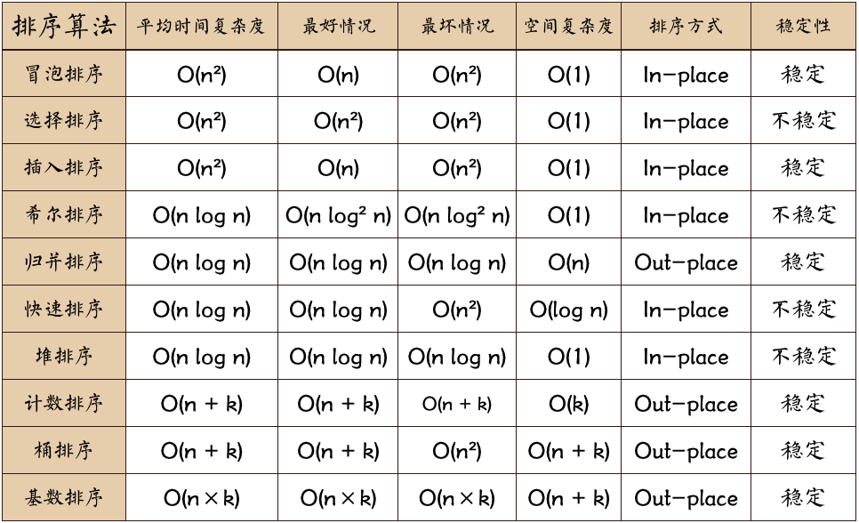
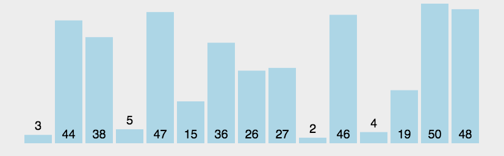
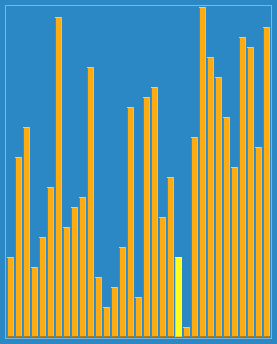
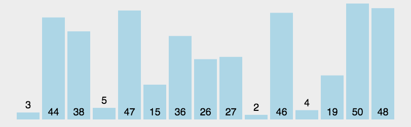

排序
复杂度
时间复杂度代表算法执行完成耗费的时间，空间复杂度代表算法执行过程中所需内存大小。
时间复杂度
- O(1)：相当于哈希表，js中类似直接从一个对象中使用键取出某个值，例子：周围有一堆柜子，柜子上标记着柜子里是什么，现在你可以直接根据标记去取某个东西，耗费的时间是一样的
- O(n)：相当于遍历一次从某个数组中拿到最大值，随着数组长度的增加耗费的时间也会线性增大，例子：从一堆试卷中找出最高分，首先你把当前最高分拿出来，如果出现更高分，替换它
- O(n^2)：比较挫的一些排序，如冒泡、选择等，例子：首先从一堆试卷中找出最高分，最高分试卷放在一边，再从剩下的试卷中找出最高分，找出后放在已经找出的最高分试卷上面，这样的操作需要执行O(n)次，每次的复杂度是O(n)，故复杂度是O(n^2)，最后得到分数从高到低的试卷堆
- O(logn)：的算法复杂度，典型的比如二分查找。设想一堆试卷，已经从高到底按照分数排列了，我们现在想找到有没有59分的试卷。怎么办呢？先翻到中间，把试卷堆由中间分成上下两堆，看中间这份是大于还是小于59，如果大于，就留下上面那堆，别的丢掉，如果小于，就留下下面那堆，丢掉上面。然后按照同样的方法，每次丢一半的试卷，直到丢无可丢为止。例子：假如有32份试卷，你丢一次，还剩16份 ，丢两次，还剩下8 份，丢三次，就只剩下4份了，可以这么一直丢下去，丢到第五次，就只剩下一份了。而log_2(32)=5，理解了这一点，就理解了为什么快速排序是O(logn)了
空间复杂度
- 一个算法的空间复杂度S(n)定义为该算法所耗费的存储空间，它也是问题规模n的函数。空间复杂度是对一个算法在运行过程中临时占用存储空间大小的量度。
- 一个算法在计算机存储器上所占用的存储空间，包括存储算法本身所占用的存储空间，算法的输入输出数据所占用的存储空间和算法在运行过程中临时占用的存储空间这三个方面。
- 一个算法的空间复杂度只考虑在运行过程中为局部变量分配的存储空间的大小，它包括为参数表中形参变量分配的存储空间和为在函数体中定义的局部变量分配的存储空间两个部分。
- 算法的空间复杂度一般也以数量级的形式给出。如当一个算法的空间复杂度为一个常量，即不随被处理数据量n的大小而改变时，可表示为O(1)；当一个算法的空间复杂度与以2为底的n的对数成正比时，可表示为O(log2n)；当一个算法的空间复杂度与n成线性比例关系时，可表示为O(n)。若形参为数组，则只需要为它分配一个存储由实参传送来的一个地址指针的空间，即一个机器字长空间；若形参为引用方式，则也只需要为其分配存储一个地址的空间，用它来存储对应实参变量的地址，以便由系统自动引用实参变量。
排序
稳定性
就是如果两个两个值相等，排序后他们的位置顺序应该跟排序前是一致的，否则，就不稳定
计算复杂度（最差、平均、和最好表现）
依据串行（list）的大小（n），一般而言，好的表现是O(nlogn)，且坏的行为是O(n2)。对于一个排序理想的表现是O(n)。仅使用一个抽象关键比较运算的排序算法总平均上总是至少需要O(nlogn)。
所有基于比较的排序的时间复杂度至少是 O(nlogn)。
内排序
所有排序操作都在内存中完成
外排序
由于数据太大，因此把数据放在磁盘中，而排序通过磁盘和内存的数据传输才能进行
常见的排序算法
常见的稳定排序算法有：
- 冒泡排序（Bubble Sort） — O(n²)
- 选择排序 - O(n²)
- 插入排序（Insertion Sort）— O(n²)
- 桶排序（Bucket Sort）— O(n); 需要 O(k) 额外空间
- 计数排序 (Counting Sort) — O(n+k); 需要 O(n+k) 额外空间
- 合并排序（Merge Sort）— O(nlogn); 需要 O(n) 额外空间
- 二叉排序树排序 （Binary tree sort） — O(n log n) 期望时间; O(n²)最坏时间; 需要 O(n) 额外空间
- 基数排序（Radix sort）— O(n·k); 需要 O(n) 额外空间
常见的不稳定排序算法有：
- 选择排序（Selection Sort）— O(n²)
- 希尔排序（Shell Sort）— O(nlogn)
- 堆排序（Heapsort）— O(nlogn)
- 快速排序（Quicksort）— O(nlogn) 期望时间, O(n²) 最坏情况; 对于大的、乱数串行一般相信是最快的已知排序
算法对比

名词解释：
- n: 数据规模
- k: “桶”的个数
- In-place: 占用常数内存，不占用额外内存
- Out-place: 占用额外内存
排序实战
- 前提：
a: Array - 目的：正序（从小到大）排列
a
冒泡排序
描述
- 第一层循环，代表排序完成需要的次数，因为最后一次不用排序，所以总共需要的排序次数为：
a.length - 1 - 第二层循环，这里每次循环产生一个最大/最小数，每次循环都要比上一次少循环一次，最终是
a[0]和a[1]的对比，然后结束，产生倒叙/正序数组，取决于交换策略
实现
1 | function swap(nums, a, b) { |
示意图

选择排序
描述
- 最外层遍历代表循环次数，最后一项不用对比
- 里面从
i + 1开始寻找最小的值，保存最小值的索引，遍历结束后，替换a[flag]和a[i]，结束一次循环 - 里面循环需要对比最后一项，最后一项有可能比前一项小
实现
1 | function swap(nums, a, b) { |
示意图

插入排序
描述
- 最外层遍历代表比较次数，当然是所有数组项都需要对比它们前面的项来确定插入位置了
- 里面的
while循环代表从这个i开始，如果i前面一项大于它，互换一下，这个位置减1，继续该操作，直到比对成功或者比对结束
实现
1 | function swap(nums, a, b) { |
示意图

希尔排序
描述
1959年Shell发明； 第一个突破O(n^2)的排序算法；是简单插入排序的改进版；它与插入排序的不同之处在于，它会优先比较距离较远的元素。希尔排序又叫缩小增量排序
参考资料
wiki
- 基本原理是将数组划分为
gap组，针对每组进行插入排序，再分为gap/2组继续对每组进行插入排序，一直到gap为1，代表最后一次排序，也就是普通的插入排序，这样做的好处是最后一次插入排序比较次数将会大大降低，复杂度跟生成步长序列的策略有关，更优的步长序列可以降低执行时间，针对不同数量级的数组执行不同的策略会有更好的效果。
实现
1 | function swap(nums, a, b) { |
示意图

归并排序
描述
- 表现比选择排序好，代价是需要额外的存储空间。
- 归并排序是建立在归并操作上的一种有效的排序算法。该算法是采用
分治法（Divide and Conquer）的一个非常典型的应用。归并排序是一种稳定的排序方法。将已有序的子序列合并，得到完全有序的序列；即先使每个子序列有序，再使子序列段间有序。若将两个有序表合并成一个有序表，称为2-路归并。
实现
递归法
这段合并排序的代码相当简单直观，但是mergeSort()函数会导致很频繁的自调用。一个长度为n的数组最终会调用mergeSort() 2*n-1次，这意味着如果需要排序的数组长度很大会在某些栈小的浏览器上发生栈溢出错误。1
2
3
4
5
6
7
8
9
10
11
12
13
14
15
16
17
18
19
20
21
22
23function merge(left, right) {
const temp = []
while(left.length && right.length) { // 对比两个数组，从两个数组的第一项开始对比，向temp中压入较小项，直到某个数组的长度为0
if(left[0] < right[0]) { // 向temp推入数组的同时删除该项
temp.push(left.shift())
} else {
temp.push(right.shift())
}
}
return temp.concat(left, right) // merge剩余的数组项(肯定是最大/最小，而且一个长度为1，另一个长度为0)
}
function mergeSort(nums) {
const l = nums.length
if(l === 1) { // 如果数组长度为1了，应该直接返回进行排序了
return nums
}
const point = Math.floor(l / 2) // 将数组一分为二，进行分治
return merge(mergeSort(nums.slice(0, point)), mergeSort(nums.slice(point)))
}
const nums = [9, 8, 6, 1, 10, 2, 3, 4, 5, 99, 1234, 5, 5, 545, 15, 54, 1]
console.log(mergeSort(nums)) // [ 1, 1, 2, 3, 4, 5, 5, 5, 6, 8, 9, 10, 15, 54, 99, 545, 1234 ]迭代法
尽管迭代版本的合并排序算法比递归实现要慢一些，但它并不会像递归版本那样受调用栈限制的影响。把递归算法改用迭代实现是解决栈溢出错误的方法之一。1
2
3
4
5
6
7
8
9
10
11
12
13
14
15
16
17
18
19
20
21
22
23
24
25
26
27
28
29function merge(left, right) {
const temp = []
while(left.length && right.length) { // 对比两个数组，从两个数组的第一项开始对比，向temp中压入较小项，直到某个数组的长度为0
if(left[0] < right[0]) { // 向temp推入数组的同时删除该项
temp.push(left.shift())
} else {
temp.push(right.shift())
}
}
return temp.concat(left, right) // merge剩余的数组项(肯定是最大/最小，而且一个长度为1，另一个长度为0)
}
function mergeSort(a) {
if (a.length === 1) return a;
const work = [];
const len = a.length;
for (let i = 0; i < len; i++) {
work.push([a[i]]);
}
work.push([]); // 如果数组长度为奇数
for (let lim = len; lim > 1; lim = ~~((lim + 1) / 2)) { // ~~ 类似于 Math.floor() 向下取整
for (let j = 0, k = 0; k < lim; j++, k += 2) {
work[j] = merge(work[k], work[k + 1]);
}
work[work.length] = []; // 如果数组长度为奇数
}
return work[0];
}
const nums = [9, 8, 6, 1, 10, 2, 3, 4, 5, 99, 1234, 5, 5, 545, 15, 54, 1]
console.log(mergeSort(nums)) // [ 1, 1, 2, 3, 4, 5, 5, 5, 6, 8, 9, 10, 15, 54, 99, 545, 1234 ]
示意图

快速排序
描述
它是处理大数据排序最快的算法之一，基本思想：
- 首先找一个基准点，一般是数组的第一项
- 然后将除了基准点的其它项分成两组，分别是小于等于这个基准点，还有大于这个基准点
- 继续对这两个数组进行第一步操作
- 体现了
递归分治的思想
实现
1 | function swap(nums, i, j) { |
或者1
2
3
4
5
6
7
8
9
10
11
12
13
14
15
16Array.prototype.quickSort = function () {
const l = this.length
if (l < 2) return this // 递归到数组长度为0或者1
const basic = this[0],
left = [],
right = []
for (let i = 1; i < l; i++) {
const iv = this[i]
iv >= basic && right.push(iv) // 算进重复元素
iv < basic && left.push(iv)
}
return left.quickSort().concat(basic, right.quickSort())
}
const arr = [5, 3, 7, 4, 1, 9, 8, 6, 2];
const ascendArr = arr.quickSort()
console.log(ascendArr) // [ 1, 2, 3, 4, 5, 6, 7, 8, 9 ]
示意图

堆排序
描述
- 堆节点的访问
通常堆是通过一维数组来实现的。在数组起始位置为0的情形中：
父节点i的左子节点在位置：2i + 1
父节点i的右子节点在位置：2i + 2
子节点i的父节点在位置：floor((i - 1) / 2)
- 堆的操作
在堆的数据结构中，堆中的最大值总是位于根节点(在优先队列中使用堆的话堆中的最小值位于根节点)。堆中定义以下几种操作：
最大堆调整（Max_Heapify）：将堆的末端子节点作调整，使得子节点永远小于父节点
创建最大堆（Build_Max_Heap）：将堆所有数据重新排序
堆排序（HeapSort）：移除位在第一个数据的根节点，并做最大堆调整的递归运算
- 思路
- 首先对从下到上对每一层的根节点进行排序，使得子节点永远小于父节点
- 然后将最后一个子节点和第一个子节点进行交换，第一个子节点一定是最大的
- 继续对除了最后一个子节点的堆进行排序，这时从上到下进行排序，使得子节点永远小于父节点，以此类推，直到未对比的数组长度为1
- 技巧
[0, Math.floor(arr.length / 2) - 1]：这个集合包含了所有的根节点- 比较根节点和左右子节点的大小，满足条件交换后，将交换后的子节点当作根节点，继续对比，直到无子节点为止
- 出堆时首先保存数组第一项，即最大的一项，然后交换第一个和最后一个数组元素，pop掉最后最后一项，直到数组长度为1，完成所有堆的出堆
实现
1 | Array.prototype.heap_sort = function () { |
示意图

计数排序
描述
计数排序是一种稳定的线性时间排序算法，使用一个额外的数组C，其中第i个元素是待排序数组A中值等于i的元素的个数。然后根据数组C来将A中的元素排到正确的位置。
- 找出待排序的数组中最大和最小的元素
- 统计数组中每个值为 i 的元素出现的次数，存入数组 C 的第 i 项
- 对所有的计数累加从 C 中的第一个元素开始，每一项和前一项相加
- 反向填充目标数组：将每个元素 i放在新数组的第 C[i] 项，每放一个元素就将 C[i] 减去1
- 最适合小范围整数排序
- 不是比较排序，排序速度快于任何比较算法
实现
1 | Array.prototype.countSort = function() { |
示意图

桶排序
描述
桶排序（Bucket sort）或所谓的箱排序，是一个排序算法，工作的原理是将数组分到有限数量的桶里。每个桶再个别排序（有可能再使用别的排序算法或是以递归方式继续使用桶排序进行排序）。桶排序是鸽巢排序的一种归纳结果。当要被排序的数组内的数值是均匀分配的时候，桶排序使用线性时间。但桶排序并不是比较排序，他不受到 O(nlogn) 下限的影响。
桶排序以下列程序进行：
- 设置一个定量的数组当作空桶子。
- 寻访序列，并且把项目一个一个放到对应的桶子去。
- 对每个不是空的桶子进行排序。
- 从不是空的桶子里把项目再放回原来的序列中。
思路：
- 创建N个桶，将数组的每一项插入对应的桶中
- 插入的时候进行某种策略的排序
- 最后将所有桶拿出来结合成一个数组
实现
1 | Array.prototype.bucketSort = function(num) { |
示意图

基数排序
描述
是一种非比较型整数排序算法，其原理是将整数按位数切割成不同的数字，然后按每个位数分别比较。由于整数也可以表达字符串（比如名字或日期）和特定格式的浮点数，所以基数排序也不是只能使用于整数。
思路
将所有待比较数值（正整数）统一为同样的数位长度，数位较短的数前面补零。然后，从最低位开始，依次进行一次排序。这样从最低位排序一直到最高位排序完成以后，数列就变成一个有序序列。
实现
1 | Array.prototype.radixSort = function() { |
示意图